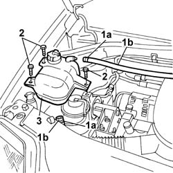
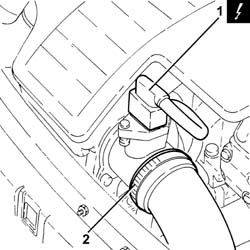
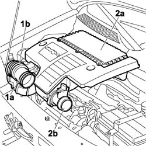
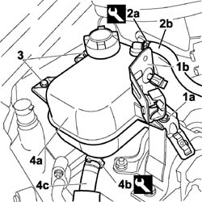
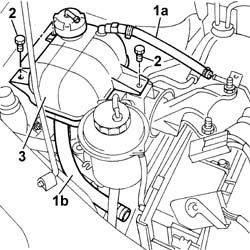
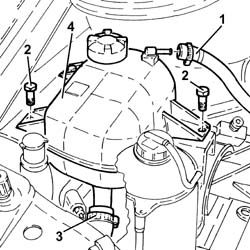

1088B10 engine cooling tank - r + r
- Path
- Procedures > 10 ENGINE > 1088 ENGINE COOLING > 1088B ENGINE COOLING RADIATOR - R + R > 1088B10 engine cooling tank - r + r
- Kind
- repair procedure (removal / refitting; the operation number is the code)
- Applies to
- engines: 1.2 8v, 1.4 8v, 1.3 JTD 16V, 1.9 JTD 8V, 1.9 DIESEL; all production periods
- Interactive page
- https://sloeber94.github.io/elrnDB-fDbl/en/#/2584298
Applies to: engines: 1.2 8v, 1.4 8v; all production periods
 Removing
Removing
 Refitting
RefittingOp. 7055B54 PROTECTION/GUARD UNDER ENGINE - R.R.
Position a suitable container for recovering the coolant fluid.
1. Open collars (1a) and disconnect engine coolant pipes (1b).
Collect the coolant in the container.
2. Unscrew the retaining bolts
3. Remove the supply reservoir, collect residual water in a special tank.

Applies to: engines: 1.2 8v, 1.4 8v; all production periods
Refitting
RemovingCheck the condition of the supply reservoir.
Fit the supply reservoir.
Connect both pipes using new collars.
Tighten the bolts fixing it to the engine mounting and to the bodyshell.
Applies to: engines: 1.3 JTD 16V; all production periods
Removing
RefittingPosition a suitable container for collecting the coolant fluid.
Ensure that the ignition key is in the OFF position, then disconnect the negative battery terminal.
 | Name | Connector |
|---|---|---|
- | Battery |
1. Disconnect the electrical connection from the air flow meter.
| Name | Connector |
|---|---|---|
1 | Air flow meter |
2. Loosen the band and disconnect the the turbocharger air inlet sleeve from the rigid pipe, air flow meter side.

Applies to: engines: 1.3 JTD 16V; all production periods
1. Loosen the band (1a) and disconnect the flexible sleeve (1b) from the tair intake.
2. Remove the air filter (2a) complete with air flow meter (2b) by releasing from the underlying pins and then from the rear fastenings.

Applies to: engines: 1.3 JTD 16V; all production periods
Draw off coolant from the engine coolant tank using a suitable syringe.
Release the wiring and pipes from the bracket.
1. Undo bolts (1a) and remove bracket (1b).
2. Use the appropriate tool to loosen the band (2a) and disconnect the coolant return pipe (2b)from the engine coolant reservoir.
 | Name | Country |
|---|---|---|
2a | Pliers | 1.881.138.000 |
3. Undo bolts securing the engine cooling reservoir
4. Raise reservoir (4a) and use the appropriate tool to remove retaining collar (4b) and disconnect the system inlet pipe (4c) from the reservoir. Remove the feed reservoir.
| Name | Country |
|---|---|---|
4b | Pliers | 1.881.138.000 |

Applies to: engines: 1.3 JTD 16V; all production periods
Refitting
RemovingConnect the engine coolant reservoir supply pipe and tighten the band.
| Name | Country |
|---|---|---|
- | Pliers | 1.881.138.000 |
Refit the reservoir and bracket in its seat and secure with bolts.
Connect the coolant return pipe to the engine coolant reservoir and tighten the band using the appropriate tool.
| Name | Country |
|---|---|---|
- | Pliers | 1.881.138.000 |
Secure the wires and pipes to the bracket.
Carry out
Op. 0010T20 ENGINE COOLANT - CHANGE.
Fit the air filter complete with air flow meter in its seat. Secure to the rear fastening and then to the underlying pins.
Connect the flexible sleeve to the air intake on the beam and tighten the band.
Connect the air intake sleeve to the turbocharger, air flow meter side, and tighten the band.
Connect the electrical connection to the air flow meter.
| Name | Connector |
|---|---|---|
- | Air flow meter |
Connect the battery negative terminal.
Applies to: engines: 1.9 DIESEL; all production periods
Removing
RefittingPlace the car on a ramp.
Op. 7055B54 PROTECTION/GUARD UNDER ENGINE - R.R.
Position a suitable container for recovering the coolant fluid.
1. Disconnect engine coolant lower pipe (1a) and upper pipe (1b).
Collect the coolant in the container.
2. Undo the retaining bolts.
3. Remove the supply tank with mount. Drain off the remaining fluid into a suitable tank.

Applies to: engines: 1.9 DIESEL; all production periods
Refitting
RemovingCheck the condition of the supply reservoir.
Fit the supply reservoir and tighen the retaining bolts to the body and engine mount.
Connect both engine coolant hoses using new bands.
Applies to: engines: 1.9 JTD 8V; all production periods
Removing
Refitting1. Loosen the band and disconnect the coolant return pipe from the engine coolant reservoir.
Drain the engine coolant reservoir using a suitable syringe.
2. Undo bolts securing the engine cooling reservoir.
3. Loosen the band and disconnect the supply pipe from the engine coolant reservoir.
4. Remove the engine coolant reservoir.

Applies to: engines: 1.9 JTD 8V; all production periods
Refitting
RemovingPlace the engine coolant reservoir back in it housing.
Connect the engine coolant reservoir supply pipe and tighten the band.
Tighten the coolant reservoir fixing bolts.
Connect the coolant return pipe to the engine coolant reservoir and tighten the band.
Refill the engine cooling system with coolant
Topics linked from this page (5)
- 0010T20 coolant change
- 0010T21 coolant check density and top up if necessary
- 7055B54 under-engine guard - r r
- A1H BATTERY ( ENGINE )
- K041 AIR FLOW METER
Topics that link to this page (10)
- 1004B10 POWER UNIT WITH MANUAL GEARBOX - R.R
- 1016C10 cylinder head - r + r and replace gasket
- 1020A20 crank case oil sump - r + r clean seals for sealant application
- 1020D26 flywheel side oil seal cover - r+r
- 1024B10 engine flywheel - r + r for versions with manual gearbox
- 1060E40 supplementary pressure pump - r r
- 1072B50 sleeves connecting air capacity box to inlet manifold is - r+r
- 1084B26 emgine oil intake duct - r r
- 1810A20 clutch - r + r
- 2110A10 manual gearbox and differential - r + r